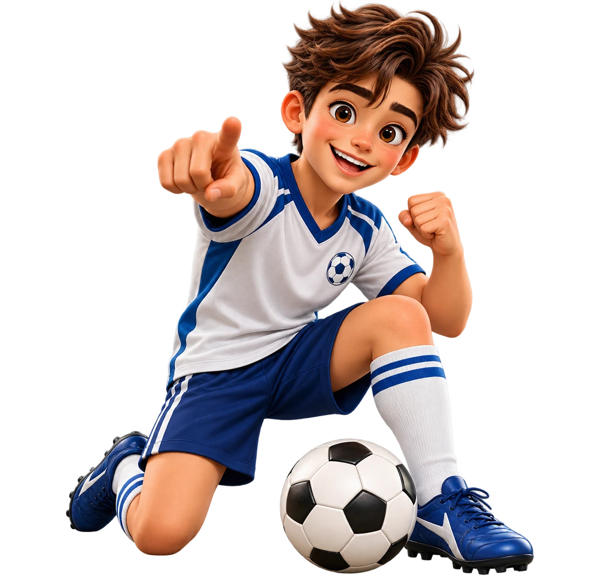
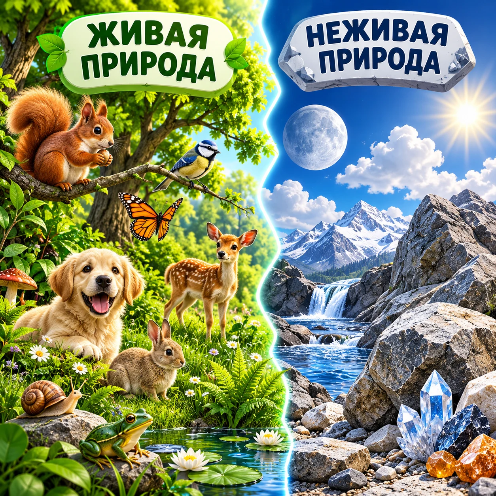
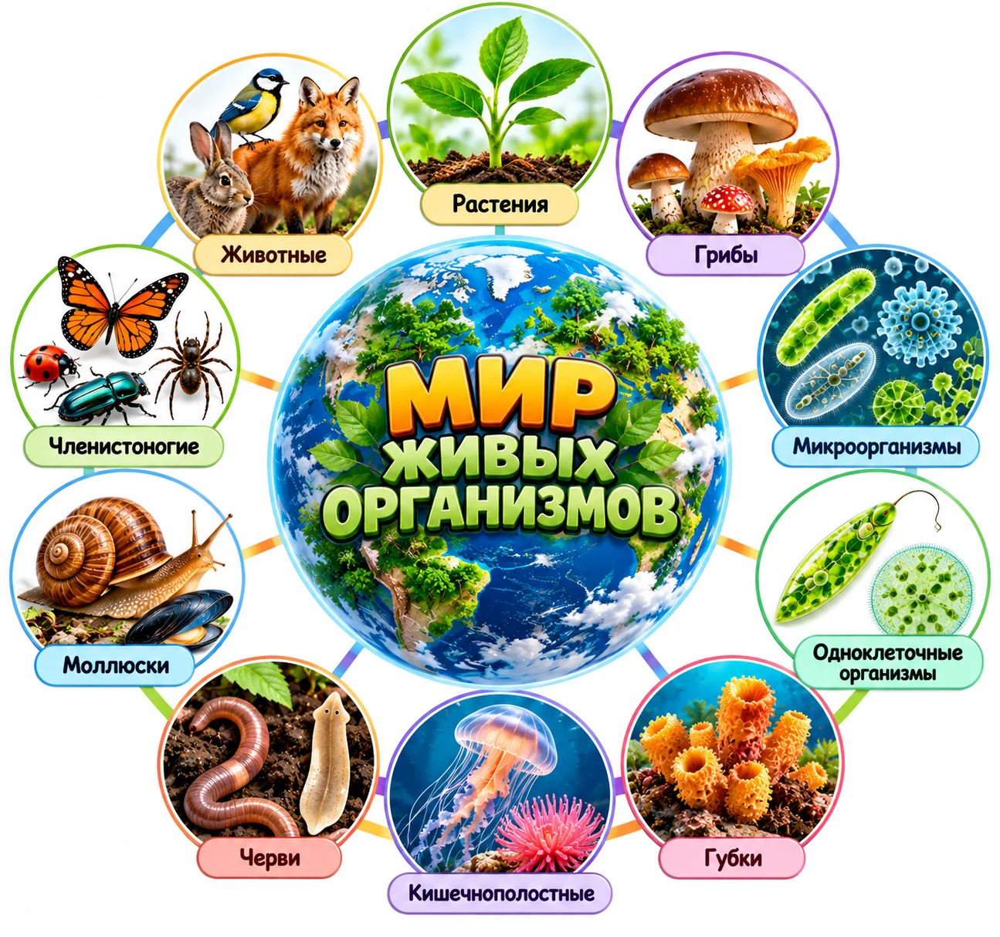
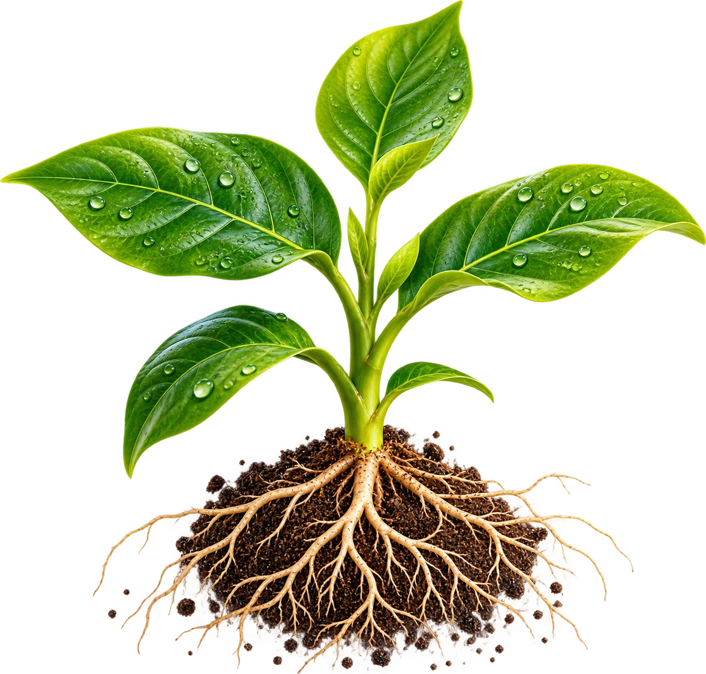
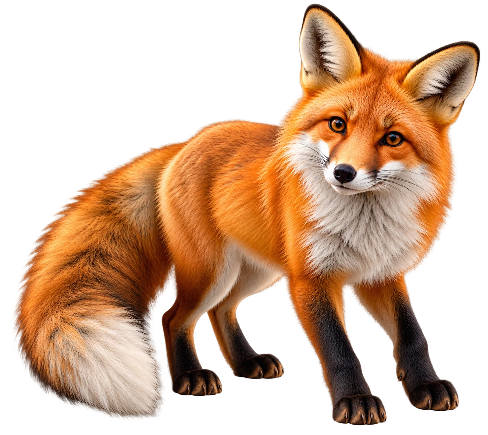
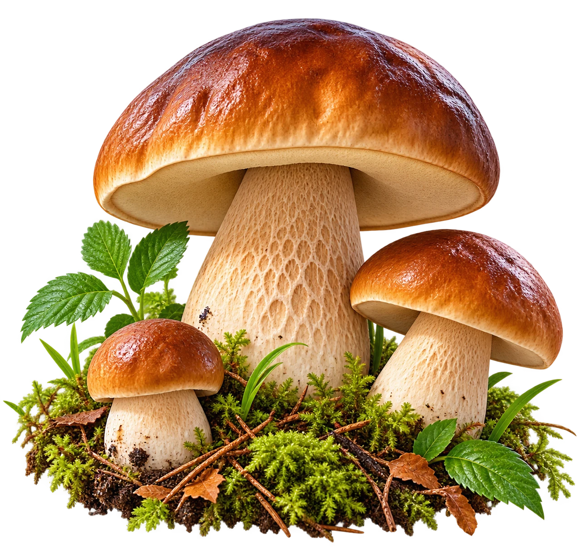
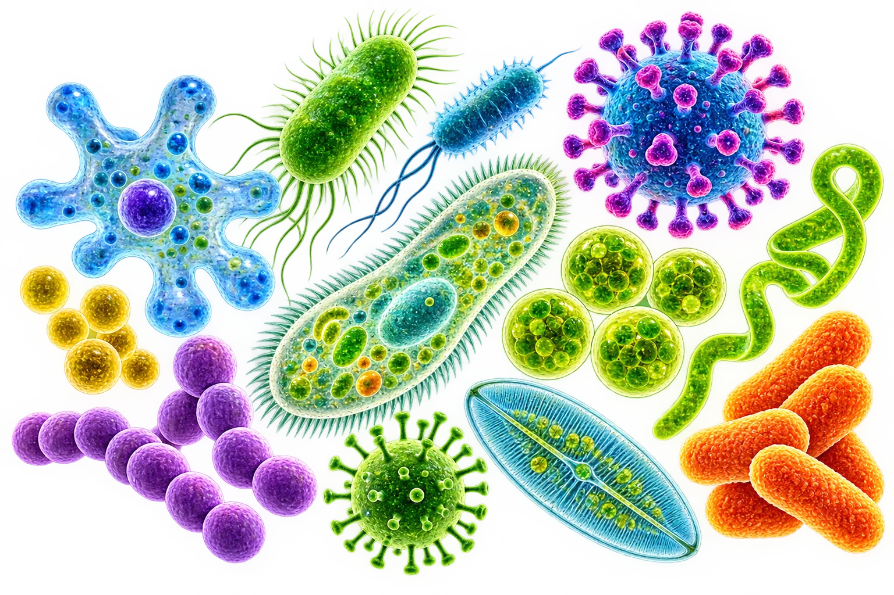
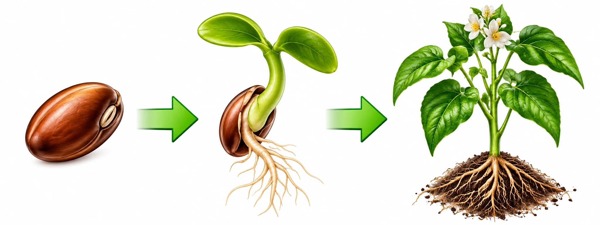
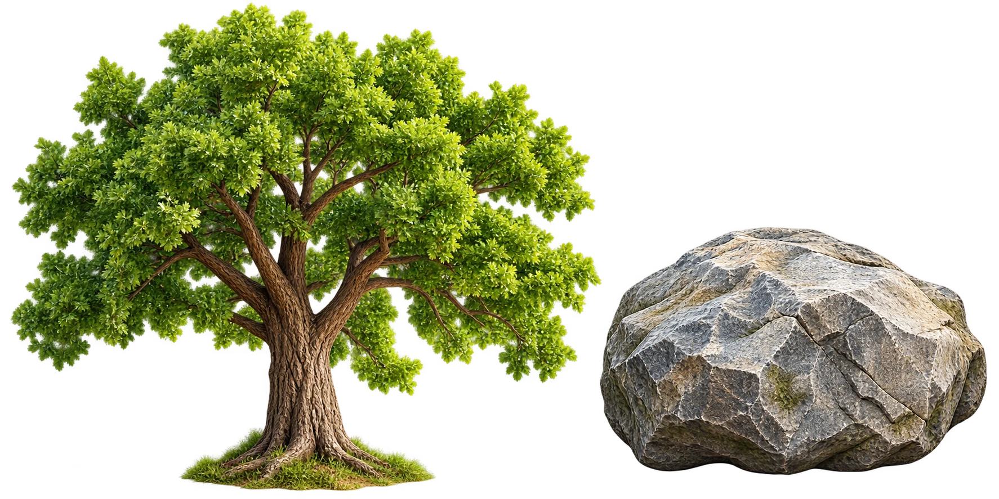

Выбери все объекты живой природы.
bios — жизнь + logos — учение, знание.


Растения
Животные
Грибы
Микроорганизмы

Теперь ты знаешь, что изучает биология, и умеешь находить объекты живой природы.